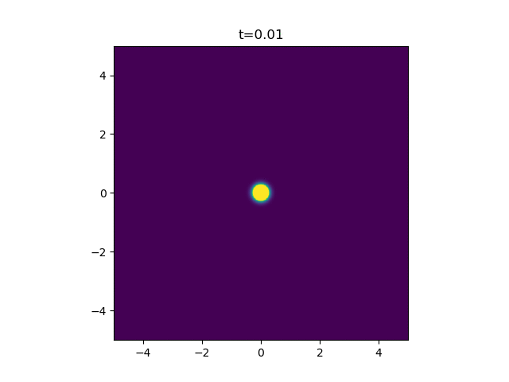
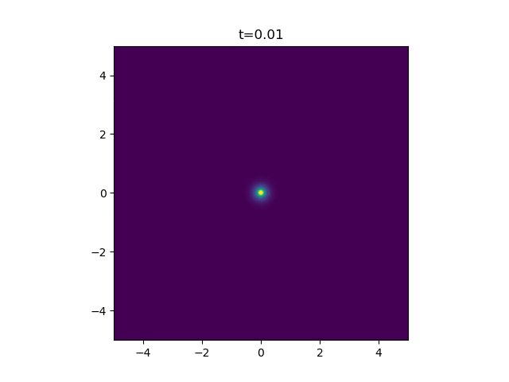

Solving the Diffusion Equation for a Continuous Point Source
Coming up with funny headers is getting more difficult...
What up y'all. It's now very much dissertation time and I am planning to post stuff on here more regularly to keep a log of interesting stuff that I come across, mainly just so I have a nice place to chart its progress. The next few posts are therefore likely to be of a more technical nature, which means probably more useless and boring for most people. So, sorry about that.
My advice would be, only read on if two or more of the following apply:
- You have way to much time on your hands.
- You really care about mathematical modelling of microbiological phenomenon.
- You happen to be exactly looking for a solution to the diffusion equation for a continuous point source.
- You are are a member of my close friends or family and you're trying to pretend you care.
If you just want to see some pretty animations, skip to the end ;)
YOU HAVE BEEN WARNED
The Diffusion Equation
The diffusion equation (which is technically different but often used interchangeably with the heat equation) is a partial differential equation that describes how a substance spreads out over space and time. It can be used to model lots of different things including how heat moves through a medium or how uhh .. how stuff diffuses. In my specific case, I'm using it to model how a cell releases an attractant signal, after it's been damaged, to make white blood cells migrate towards it. But that's not really that relevant for the purpose of this post, other than I'm mostly interested in the two-dimensional case.
The diffusion equation, when the rate of diffusion is independent of the local density of the diffusing substance, can be written as
where \(A(\mathbf{r}, t)\) is a scalar field representing the concentration of the diffusing substance at any vector position \(\mathbf{r}\) and time \(t\). \(\nabla^{2}\) is the Laplacian, the differential operator defined as
and \(D\) is the diffusion constant. So for example, in two dimensions, it becomes
To solve this equation we need an initial condition and a set of boundary conditions. In our case, we will be considering an infinite line, plane, volume, so our boundary conditions will always just be that the concentration is zero at infinity.
An Instantaneous Point Source
This describes the process of a finite quantity \(Q_0\) of the diffusing substance being releated at a single point \(\mathbf{r'}\) at \(t=0\). It turns out this has a neat closed-form solution in any number of dimensions, \(d\). To derive this solution rigorously you need to dive into the dreaded realm of Green's functions, which is solely understood by hardcore maths folk. No one has time for that. I'm just going to state the answer, as given in this paper from 1959 by Pattle [1].
where \(d\) is the number of dimensions. You can however test this is a solution by plugging it in if you really want to. But one thing we can fairly quickly see is that the amount of heat present in the system is always conserved. If we integrate the concentration over all space at any time \(t\), we find
Because
Groovy. So in the case of two dimensions you get
Which you can code up in python fairly easily.
import numpy as np
D, Q_0 = 1, 1
x_space = np.linspace(-5, 5, 1000)
y_space = np.linspace(-5, 5, 1000)
x, y = np.meshgrid(x_space, y_space)
def A_inst_ps(x, y, t, , x_0=0, y_0=0):
'''
Returns the concentration of a diffusing substance for an
instantaneous point-source at (x, y) at time t.
'''
c = Q_0 / (4 * np.pi * D * t)
r_squared = (x - x_0) ** 2 + (y - y_0) ** 2
return c * np.exp(-r_squared / (4 * D * t))

A Continuous Point Source
But I'm actually interested in a continuous point source. You can find the solution to the above by a quick google - it's not a very well-kept secret. But actually, a continuous point source is a bit harder to solve. I couldn't find it anywhere which is why I think this warrants a blog post.
If a substance is liberated at a rate \(\phi(t)\) per unit time from \(t=0\) to \(t=\tau\), then we have to integrate over time.
(using \(r^2\) as a shorthand for \(|\mathbf{r} - \mathbf{r'}|^{2}\)). In the case where the substance is released at a constant rate \(q\), this simplifies to
In \(d\neq2\), this is made easier by substitution
Then the integral simplifies down a lot and can be written in terms of the error function \(\text{erf(x)}\). Carslaw and Jaeger show an example of this in three dimensions in section 10.2 of the book Conduction of heat in solids [2]. But, because the denominator blows up, this substitution fails for the case of \(d=2\). Here we have
The solution to this integral can be found by looking at another one. According to Wolfram Alpha (lol) the following indefinite integral has the following answer
where \(\text{Ei}(x)\) is the exponential integral. That's the function defined as
Note that it's just the same as our integral but with
which is an OK substitution, because \(D\) is always positive. Therefore, we can conclude that
Cool! We're also massively helped out by the fact that Scipy has the exponential integral as one of its special function. Let's code it up.
from scipy.special import expi # The exponential integral function
q, tau = 1, 0.5
def A_cont_ps(x, y, t, x_0=0, y_0=0):
'''
The concentration of a substance which was continuously released
from a point (x_0, y_0) from t=0 to t=tau.
'''
q_on_4piD = q / (4 * np.pi * D)
r_squared_on_4D = ((x - x_0) ** 2 + (y - y_0) ** 2) / (4 * np.pi * D)
ei2 = expi(-r_squared_on_4D / t )
if t < tau:
return -q_on_4piD * ei2
else:
return q_on_4piD * (expi(-r_squared_on_4D / (t - tau)) - ei2)

How pretty. Finally, for my application, I'm looking at how a ring of cells on the outside of a wound release the attractant. So here we just sum up a bunch of independent continuous point sources.

Beautiful. That's all folks!
References
[1] R. E Pattle, 1959, Diffusion from an instantaneous point source with a concentration-dependant coefficient. The Quarterly Journal of Mechanics and Applied Mathematics
[2] Carslaw, Jaeger. 1959, Conduction of heat in solids. Section 10.2
Added extra - how to make the animations
I just made the animations by plugging in the formula, as written in the code above, over the \(x\)-\(y\) plane, for a bunch of different times. For each time, you save a matplotlib imshow and then string them altogether into a gif.
import matplotlib.pyplot as plt
def plot_field(field: np.array, t: float):
'''
Given a concentration field, imshow it
'''
plt.figure()
plt.imshow(field, extent=[-5, 5, -5, 5], vmin=0, vmax=0.6)
plt.title('t={:.2f}'.format(t))
plt.savefig('{:.2f}.png'.format(t))
plt.close()
def save_gifs(name):
'''
Go through the directory and save all the pngs into a gif
(this may only work on linux sorry for being a nerd)
'''
check_output(['convert', '-delay', '100', '*.png', name + '.gif'])
for f in os.listdir():
if '.png' in f:
os.remove(f)
def make_gif1():
for t in np.linspace(0.01, 1.01, 101):
z = A_inst_ps(x, y, t)
plot_field(z)
save_gifs('gif1')
def make_gif2()
for t in np.linspace(0.01, 1.01, 101):
z = A_cont_ps(x, y, t)
plot_field(z)
save_gifs('gif2')
def make_gif4(n_cells=10, R=2.5):
d_theta = 2 * np.pi / n_cells
centres = [(R * np.cos(theta), R * np.sin(theta)) for theta in np.linspace(0, 2 * np.pi, n_cells + 1)[:-1]]
for t in np.linspace(0.01, 1.51, 151):
z = sum([A_cont_ps(x, y, t, x_0, y_0) for x_0, y_0 in centres])
plot_field(z)
save_gifs('gif3')
make_gif1()
make_gif2()
make_gif3()